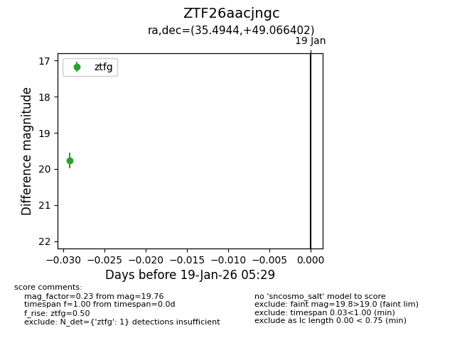
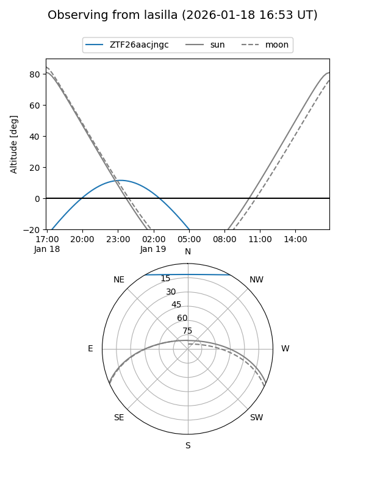
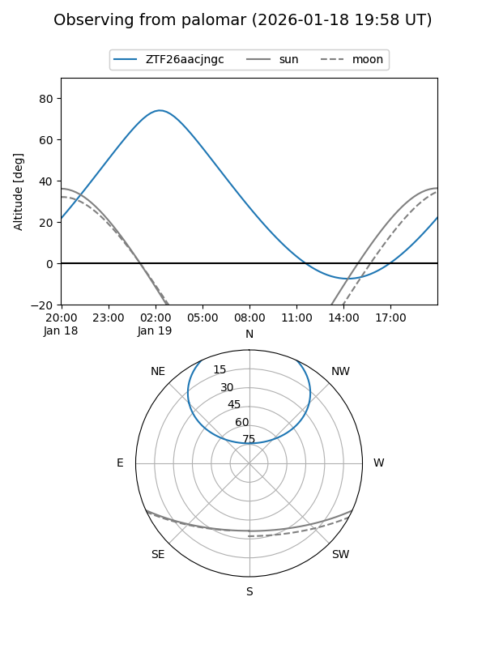

ZTF26aacjngc
Target ZTF26aacjngc at 2026-01-19 05:30
Aliases and brokers:
FINK: link
Lasair: link
ALeRCE: link
alt names
ZTF26aacjngc (ztf,fink_ztf)
Coordinates:
equatorial (ra, dec) = 35.4944,+49.06640
equatorial (HMS+DMS) = 02:21:58.66,+49:03:59.05
galactic (l, b) = (137.8253,-11.16942)
Flags:
Photometry:
last ztfg=19.76
1 ztfg detections
Lightcurve

Visibility


Additional plots